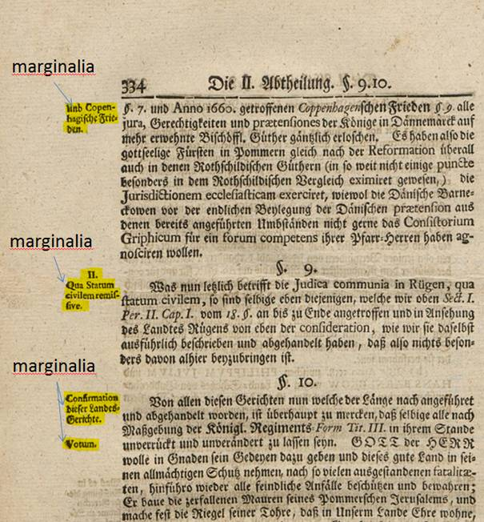

Marginalie (marginalia)
Anmerkungen, Quellenhinweise, Kommentare o. ä. am Rand (Außensteg, selten am Bundsteg) von Seiten werden als Marginalien bezeichnet. Oft sind sie in abweichender Schriftart und -größe gesetzt. Im Kontext der Ground-Truth-Erfassung werden gedruckte Marginalien als solche ausgezeichnet.
Handschriftliche Anmerkungen werden als GraphicRegion / handwritten-annotation behandelt.
